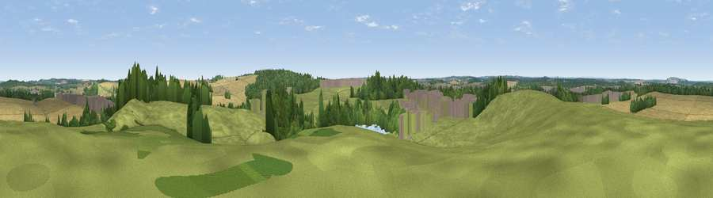

Viewpoint near Bilsthorpe
#31954 in England · top 50% of its area beats it · near BilsthorpeWhere it is
The exact computed spot (SK 65525 61875). Click the marker for map links.
The view, rendered

A 360° render of this exact spot computed from the terrain model, tree cover and land cover — summer colours, afternoon light, calibrated against photographs of famous viewpoints. Real trees, hedges and buildings will differ in detail.
The panorama
Grey silhouette: terrain skyline in each direction (720 bearings, Earth curvature and refraction included). Dashed green: skyline with trees (+15 m) and buildings (+8 m) as obstacles. Blue strip: how far the ground is visible on each bearing.
Where the view opens
Wedge length = distance to the farthest visible ground on that bearing (vegetation-aware). Rings at 10, 25 and 50 km.
What fills the view
40% grassland · 36% cropland · 18% woodland · 4% built-up · 2% water
Angular shares of the visible panorama (visual magnitude), not map area. Landscape diversity 0.54 (0–1 Shannon).
Key numbers
More beautiful places nearby
The staircase of upgrades: each row has a higher view potential than everything closer. Driving times are estimates from straight-line distance, calibrated against real road routing — check an actual route before setting out.
| Place | Direction | Drive | Score |
|---|---|---|---|
| Mill Hill | E · 1 km | ~4 min | 42.7 |
| Viewpoint near Rainworth | WSW · 6 km | ~13 min | 45.6 |
| Viewpoint near Ollerton | NNW · 6 km | ~13 min | 46.1 |
| Burstheart Hill [Thoresby Colliery] | NNW · 7 km | ~14 min | 69.3 |
| Crich Stand | WSW · 32 km | ~49 min | 73.0 |
| Alport Height | WSW · 36 km | ~55 min | 73.9 |
| Viewpoint near Wharncliffe Side | NW · 48 km | ~69 min | 75.2 |
| Viewpoint near Woodhouse Eaves | SSW · 49 km | ~70 min | 77.7 |
53.14999, -1.02169 · source: screening · position refined by local search. Computed location — check access rights before visiting.